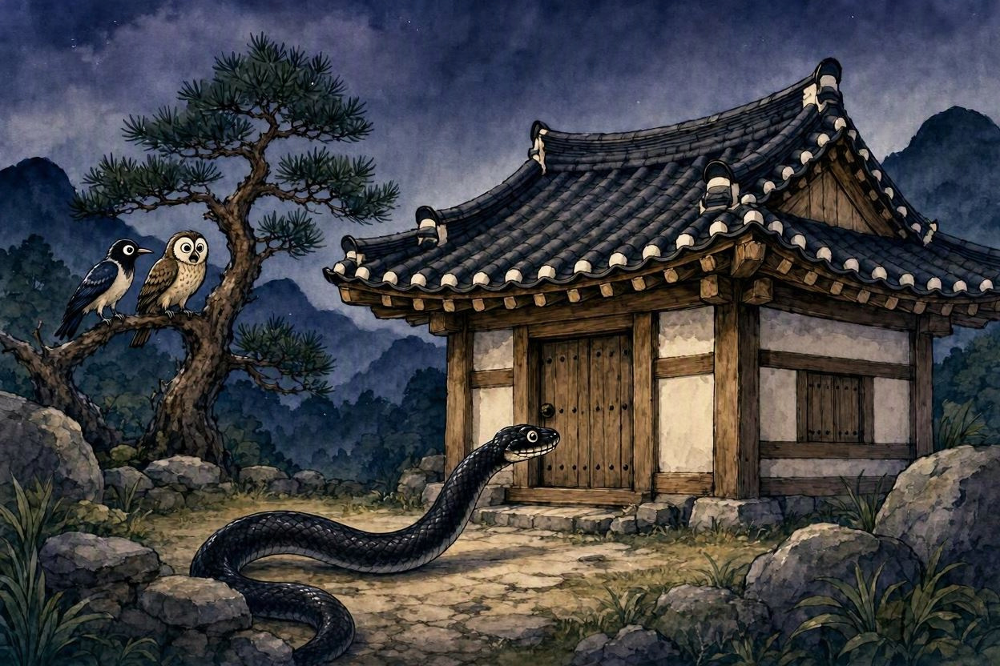

방정환 · 《어린이》 1925년
까치의 옷
1장. 깊은 산속의 약속
옛날 깊은 산속 작은 집에 한 노파가 어린 아기를 기르며 살고 있었습니다. 집 뒤에는 서로 사이좋은 올빼미와 까치가 지내고 있었습니다.
어느 날 밤, 노파는 마을에 볼일이 생겼지만 어린 아기를 혼자 두고 가기가 걱정되었습니다. 고민하던 노파는 올빼미와 까치에게 아기를 잘 지켜 달라고 부탁했습니다.
“내가 잠깐 마을에 다녀올 동안 아기를 잘 보아 주렴. 그러면 너희에게 예쁜 옷을 한 벌씩 만들어 주마.”
까치와 올빼미는 울음소리로 대답했고, 노파는 두 새를 믿고 어두운 산길을 따라 마을로 내려갔습니다.
밤이 점차 깊어가던 중, 밤눈 밝은 올빼미가 밑을 내려다보니 큰일이 났습니다. 무서운 시커먼 구렁이가 어린애가 자는 방을 향해 자꾸 가고 있었습니다.
